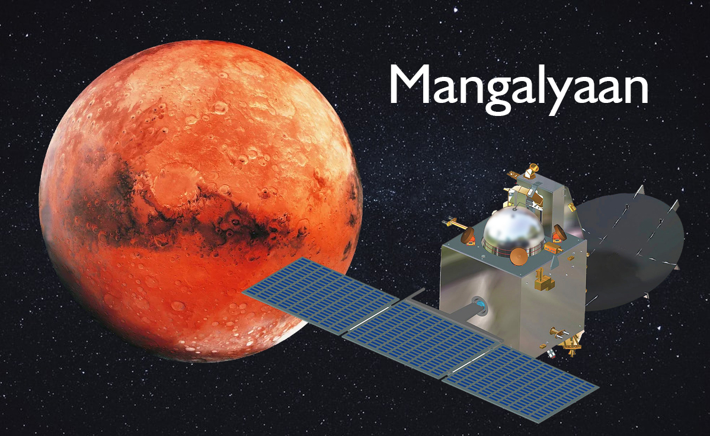

Chandrayaan - India's ambitious lunar exploration mission.
The Chandrayaan Programme is a multi-mission lunar exploration programme. India’s former prime minister Atal Bihari Vajpayee announced the Chandrayaan project on 15 August 2003. It gave an essential boost to India’s space ventures and encouraged upcoming governments to allot more funds for space and research.
The Chandrayaan 3 mission was announced by ISRO in November 2019. ISRO wanted to launch Chandrayaan 3 in 2020 or 2021, but the pandemic made it extremely tough. ISRO’s scientists and engineers are fully prepared for a successful landing of the Vikram Lander on the moon. It will be a big event if the lunar lander successfully performs a smooth landing on the moon.
Mangalyaan - India's first interplanetary Mars mission.